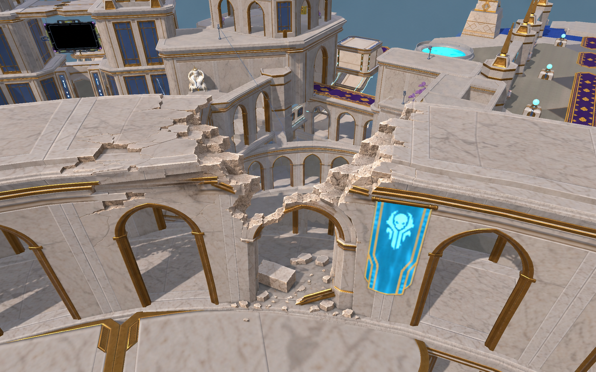

Art direction based on the existing Unity view. Missing stone and broken trim carry the damage. Soot stays close to the fracture.

Choose marks by their source. Smoke rises from a recess, runs beneath a ledge or wraps a corner. Vary scale and strength between sites. Leave clean stretches of wall between affected areas.
Download grayscale atlas · Pattern coordinates and suggested sizes